2. Installation d'un environnement de travail
2.1. Python 3.8.1
Les exemples de ce document ont été testés avec l'interpréteur Python 3.8.1 disponible à l'URL |https://www.python.org/downloads/| (fév 2020) sur une machine Windows 10 :
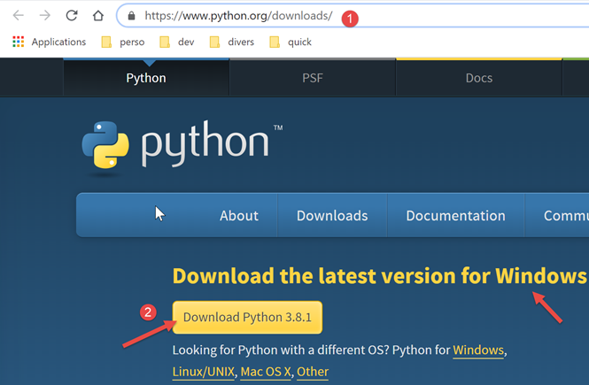
L'installation de Python donne naissance à l'arborescence de fichiers [1] et au menu [2] dans la liste des programmes :
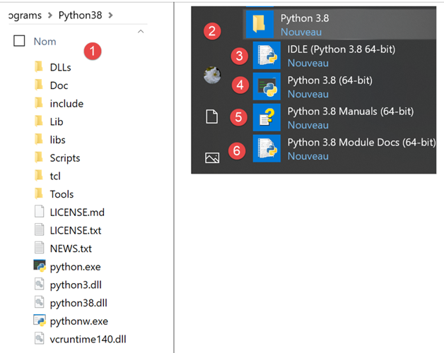
- [3-4] : deux interpréteurs Python interactifs ;
- [5] : la documentation Python ;
- [6] : la documentation des modules Python ; Nous n'utiliserons pas l'interpréteur Python interactif. Il faut simplement savoir que les scripts de ce document pourraient être exécutés avec cet interpréteur. Pratique pour tester le fonctionnement d'une fonctionnalité Python, il l'est peu pour des scripts devant être réutilisés. Voici un exemple avec l'option [4] ci-dessus :
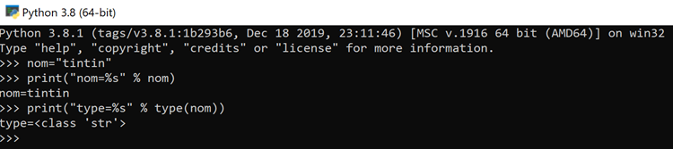
Le prompt >>> permet d'émettre une instruction Python qui est immédiatement exécutée. Le code tapé ci-dessus a la signification suivante :
Lignes :
- 1 : initialisation d'une variable. En Python, on ne déclare pas le type des variables. Celles-ci ont automatiquement le type de la valeur qu'on leur affecte. Ce type peut changer au cours du temps ;
- 2 : affichage du nom. 'nom=%s' est un format d'affichage où %s est un paramètre formel désignant une chaîne de caractères. nom est le paramètre effectif qui sera affiché à la place de %s ;
- 3 : le résultat de l'affichage ;
- 4 : l'affichage du type de la variable nom ;
- 5 : la variable nom est ici de type class. Avec Python 2.7 elle aurait la valeur <type 'str'> ; Maintenant, ouvrons une console Windows :
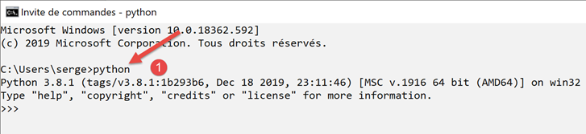
Le fait qu'on ait pu taper [python] en [1] et que l'exécutable [python.exe] ait été trouvé montre que celui-ci est dans le PATH de la machine Windows. C'est important car cela signifie que les outils de développement Python sauront trouver l'interpréteur Python. On peut le vérifier ainsi :
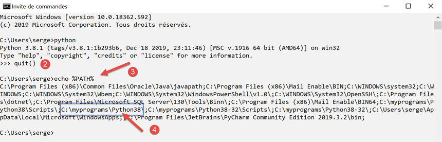
- en [2], on quitte l'interpréteur Python ;
- en [3], la commande qui affiche le PATH des exécutables de la machine Windows ;
- en [4], on voit que le dossier de l'interpréteur Python 3.8 fait partie du PATH ;
2.2. L'IDE PyCharm Community
2.2.1. Introduction
Pour construire et exécuter les scripts de ce document, nous avons utilisé l'éditeur [PyCharm] édition Community disponible (fév 2020) à l'URL |https://www.jetbrains.com/fr-fr/pycharm/download/#section=windows| :
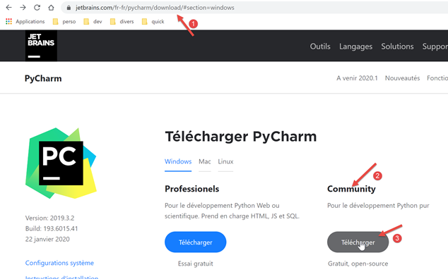
Téléchargez l'IDE PyCharm Community [1-3] et installez-le.
Lançons l'IDE PyCharm puis créons un premier projet Python :

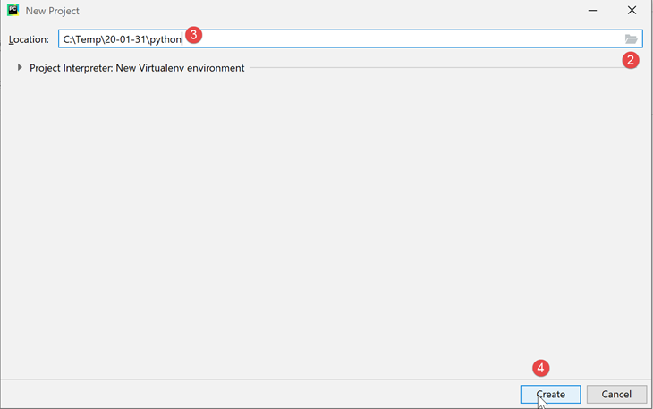
- en [2-4], créez un nouveau projet ; L'IDE PyCharm présente le projet créé sous la forme suivante :
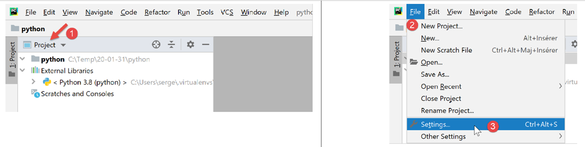
- en [2-3], examinons les propriétés de l'IDE ;
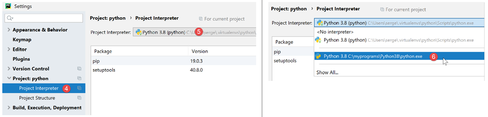
- en [4], l'interpréteur Python qui sera utilisé pour le projet ;
- en [5], une liste déroulante des interpréteurs disponibles ;
- en [6], on choisit l'interpréteur téléchargé au paragraphe |Python 3.8.1| ;
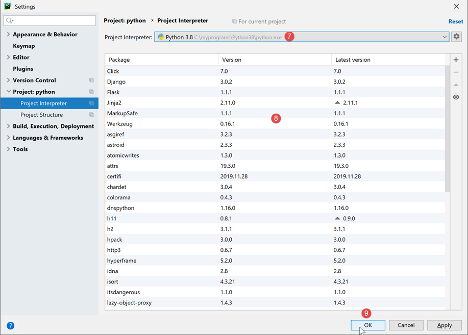
- en [7], l'interpréteur choisi ;
- en [8], la liste des packages disponibles avec cet interpréteur. Les packages contiennent des modules que les scripts Python peuvent utiliser. Il existe des centaines de modules disponibles ; Commençons par créer un dossier dans lequel nous mettrons notre premier script Python :
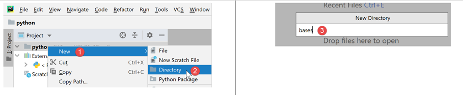
- cliquer droit sur le projet, puis [1-2] pour créer un dossier ;
- en [3], tapez le nom du dossier : il sera créé dans le dossier du projet ; Puis créons un script Python :
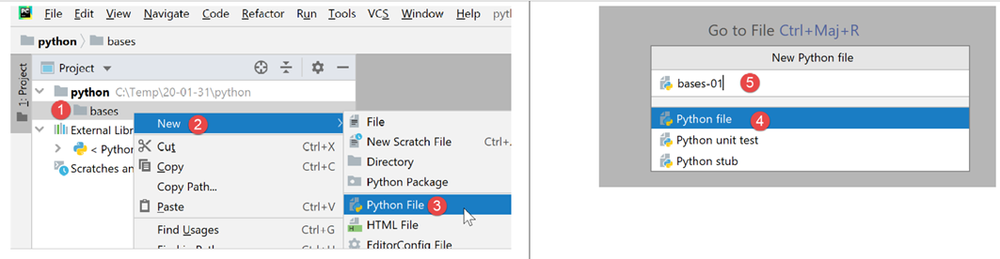
- cliquer droit sur le dossier [bases], puis [1-3] ;
- en [4-5], indiquez le nom du script ; Écrivons notre premier script :
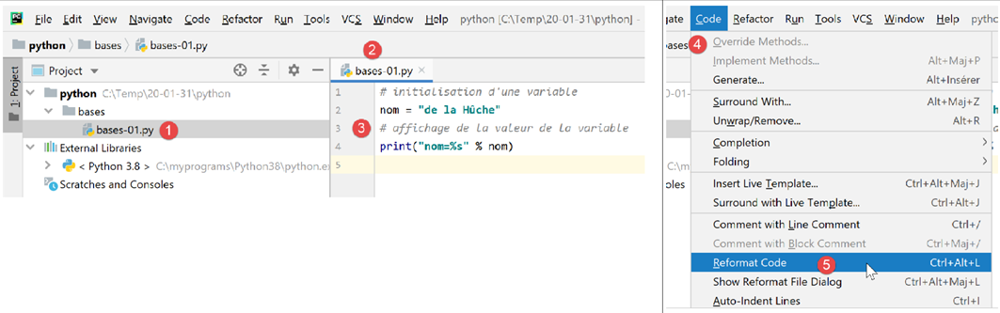
- en [3], nous écrivons le script suivant :
- lignes 1, 3 : les commentaires commencent avec le signe # ;
- ligne 2 : initialisation d'une variable. Python ne déclare pas le type de ses variables ;
- ligne 4 : affichage écran. La syntaxe utilisée ici est [format % données] avec :
- format : nom=%s où %s désigne l'emplacement d'une chaîne de caractères. Celle-ci sera trouvée dans la partie [données] de l'expression ;
- données : la valeur de la variable [nom] viendra remplacer le format %s dans la chaîne de format ;
- avec [4-5], on reformate le code selon les recommandations de l'organisme gérant Python ; Le script est exécuté avec un clic droit sur le code [6] :
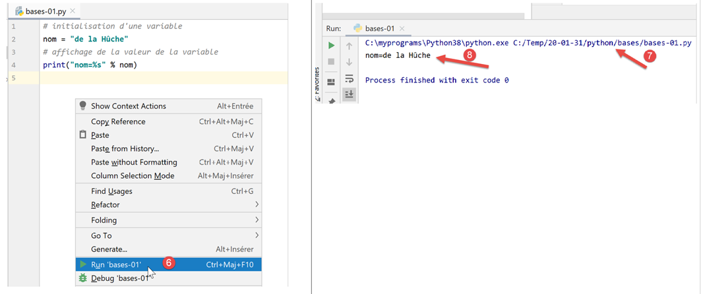
- en [7], la commande exécutée ;
- en [8], le résultat de l'exécution ; Pour exécuter le script du document, téléchargez le code à l'URL |https://tahe.developpez.com/tutoriels-cours/python-flask-2020/documents/python-flask-2020.rar| puis dans PyCharm procédez comme suit :
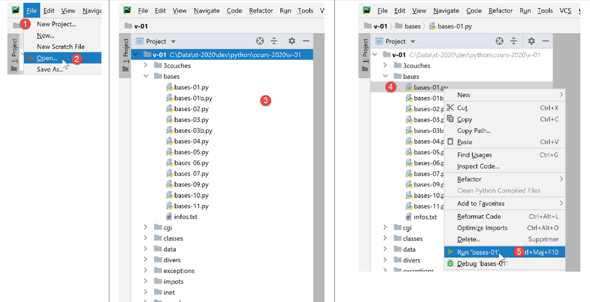
- en [1-2], ouverture d'un projet existant : désigner le dossier du code téléchargé ;
- en [3], le projet ouvert ;
- en [4-5], exécution de l'un des scripts du projet ;
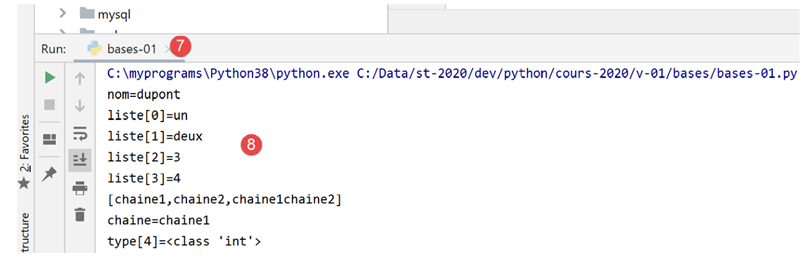
- en [7-8], les résultats de l'exécution ;
2.2.2. Environnement virtuel d’exécution
Notre environnement de travail est désormais opérationnel. Nous allons cependant le modifier pour écrire les scripts de ce cours. Tout d’abord, modifions la configuration de Pycharm :
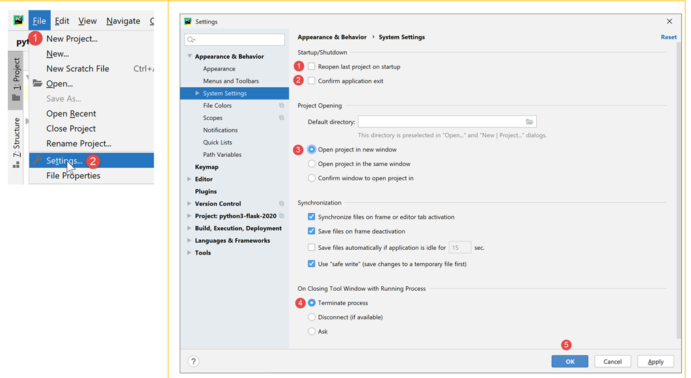
Dans la fenêtre de droite :
- par défaut, la case [1] est cochée. On la décoche pour que Pycharm n’ouvre pas par défaut le dernier projet ouvert mais nous laisse choisir celui qu’il faut ouvrir ;
- en [2], on ne confirme pas la sortie de Pycharm lorsqu’on ferme la fenêtre de l’application ;
- en [3], on ouvre les nouveaux projets dans une autre fenêtre ;
- en [4], si on ferme Pycharm et qu’un programme est en cours d’exécution, celui-ci est arrêté ; Fermons maintenant Pycharm puis rouvrons-le :

- en [1], on crée un nouveau projet ;
- en [2], indiquer le dossier du projet ;
- en [3], prendre un environnement virtuel. Un environnement virtuel est propre au projet que l’on crée. Il ne se mélange pas avec les environnements virtuels d’autres projets. Un projet Python / Flask utilise de nombreuses bibliothèques externes qu’il faut installer. Un projet P1 peut utiliser une bibliothèque B dans sa version v1 et un projet P2 utiliser la même bibliothèque B mais dans sa version v2. Ces deux versions peuvent être plus ou moins comptatibles. Or lorsqu’on installe une bibliothèque dans sa version v2 et qu’une version v1 est déjà installée, celle-ci est écrasée par la version v2. Cela peut être problématique pour le projet qui utilisait la version v1 si la nouvelle version v2 n’est pas totalement compatible avec la version v1. Pour éviter ces problèmes, on isole chaque projet dans un environnement virtuel ;
- en [4], désigner le dossier où seront rangées les bibliothèques python qui seront téléchargées au cours du projet. Nous avons choisi ici un dossier [venv] (virtual environment) à l’intérieur du dossier du projet. Rien n’oblige à faire cela ;
- en [5], l’interpréteur Python du projet. C’est celui que nous avons installé dans l’étape précédente ;
- en [6], créer le projet ;
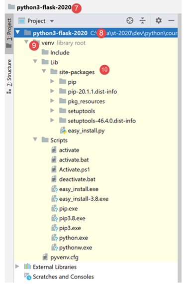
- en [7-8], le projet créé ;
- en [9], l’environnement d’exécution du projet, appelé environnement virtuel ;
- en [10], le dossier [site-packages] est le dossier dans lequel seront rangées les bibliothèques téléchargées ultérieurement ;
2.2.3. Git
Ensuite, on active un logiciel de contrôle du code source. Ce sera ici Git [1-4] :
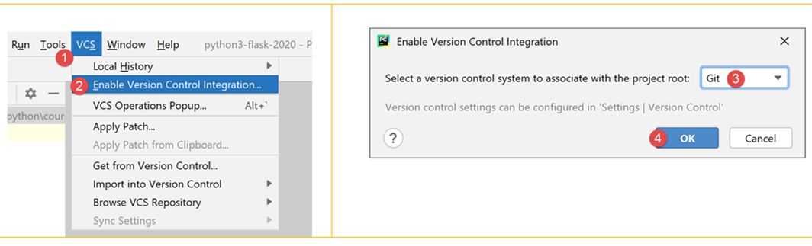
Un logiciel de contrôle du code source (VCS : Version Control System) permet de suivre les évolutions d’un projet. On peut prendre des photos, par une opération appelée commit, du projet à différents moments de sa vie. Si on fait deux commit aux temps T et T+1, le VCS permet de connaître ce qui a changé entre les deux versions commitées. Normalement le VCS est utilisé par une équipe de développeurs. Ceux-ci font des commit de leur code lorsque celui-ci a été dûment testé. A partir du VCS, les autres développeurs peuvent récupérer ce code validé et l’utiliser.
Ici, il n’y a qu’un développeur. L’expérience montre qu’on peut avoir une application qui marche au temps T et ne marche plus au temps T+1. On voudrait bien alors revenir en arrière au temps T pour repartir de zéro. Le VCS permet cela et c’est pour cette raison que l’on va l’utiliser ici.
Nous montrons comment procéder avec Git.
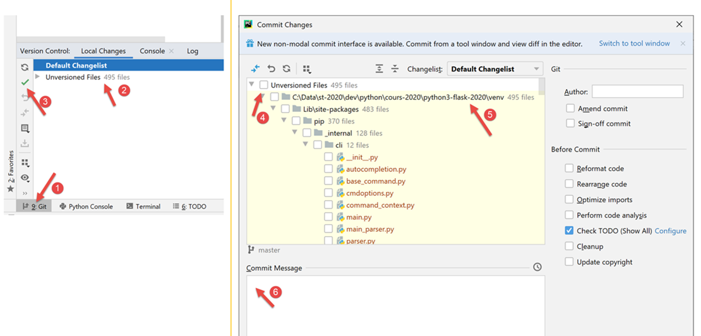
- en [1], sélectionner l’onglet [Git] (en bas à gauche) ;
- en [2], on voit qu’il y a 495 fichiers du projet qui ne sont pas versionnés par Git. Cela veut dire qu’ils ne feront pas partie des photos du projet, lors des commit ;
-
en [3], le bouton du [commit] ou bouton de validation du projet. Comme il a été dit, Git prend alors une photo du projet et la stocke dans un dossier [.git] à la racine du projet (non affiché par Pycharm mais visible dans l’explorateur windows) ; Validons [3] le projet dans son état actuel.
-
en [4], la liste des fichiers non versionnés ;
- en [5], la totalité de ces fichiers non versionnés sont ceux de l’environnement virtuel [venv] ;
-
en [6], tout commit doit s’accompagner d’un message. Le développeur met ici les modifications amenées par la version qui va être commitée vis-à-vis de la dernière version commitée ; Certains dossiers ou fichiers peuvent être ignorés par Git. Ils ne font alors jamais partie de la photo. En [5] ci-dessus, cliquons droit sur le dossier [venv].
-
en [1-3], on indique que le dossier [venv] ne doit pas faire partie des photos de Git. La liste des dossiers et fichiers ignorés par Git sont mis dans un fichier appelé [.gitignore] [4] ;
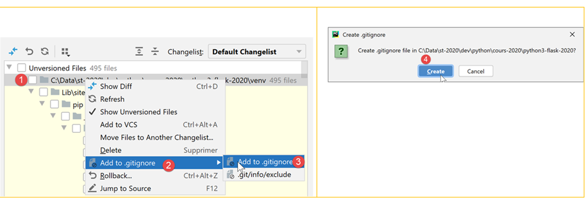
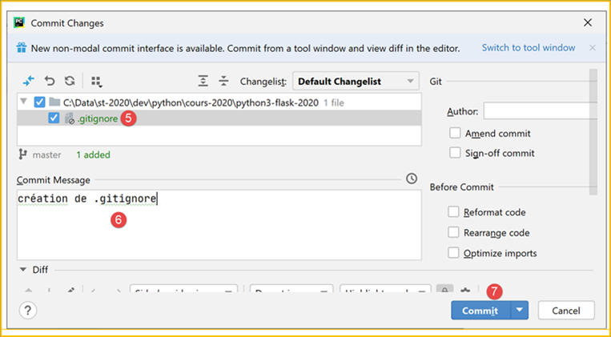
- après l’opération précédente, tous les fichiers du dossier [venv] disparaissent de la liste des fichiers non versionnés. Ne reste plus que le fichier [.gitignore] qui vient d’être créé ;
- en [5], nous le sélectionnons pour qu’il soit sauvegardé ;
- en [6], on crée un message de commit :
- en [7], on valide. La photo du projet est alors prise ;
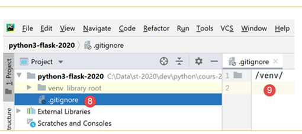
- en [8-9], le contenu du fichier [.gitignore] : une seule ligne avec le nom du dossier [/venv] qui indique que son contenu doit être ignoré dans les photos ; Montrons maintenant à quoi peut nous servir Git. Tout d’abord, nous créons un dossier [git] (vous pouvez utiliser tout autre nom – il pourra être détruit à la fin de la démonstration) :
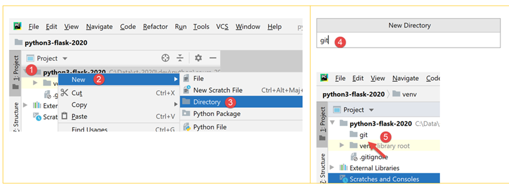
- en [1-5], on crée un dossier [git] ;
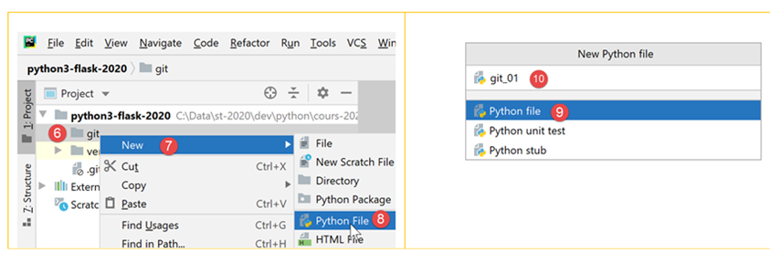
- en [6-10], on crée un script Python [git_01] ;
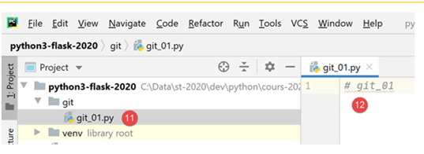
- en [11-12], le script ne contient qu’un commentaire ;
- en [13-14], on crée une copie de [git_01]. Pour cela, sélectionner [git_01] et faire Ctrl-C (Copier) puis (Ctrl-V) (Coller) et indiquer [git_02] comme nom de fichier ;
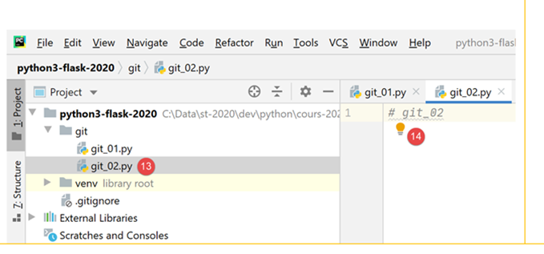
Maintenant, committons notre projet. Une photo va être prise avec les deux fichiers [git_01, git_02] ;
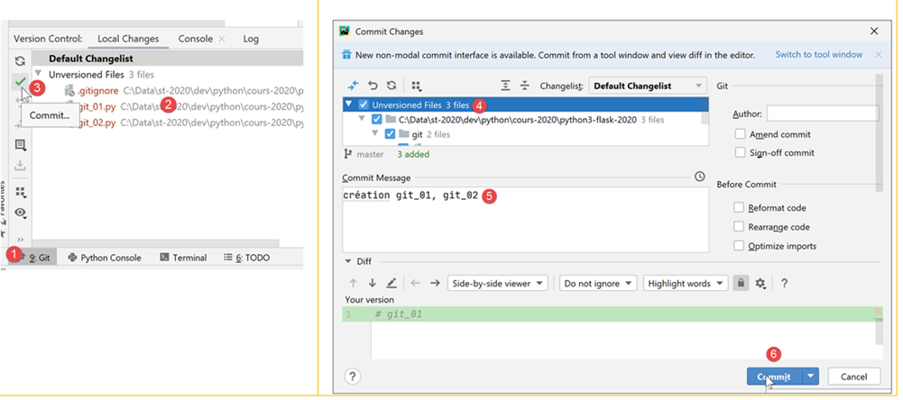
- en [1-3], on committe le projet ;
- en [4], on sélectionne les fichiers non versionnés qu’on veut committer, ici tous ;
- en [5], on met le message identifiant le commit ;
- en [6], on valide ;
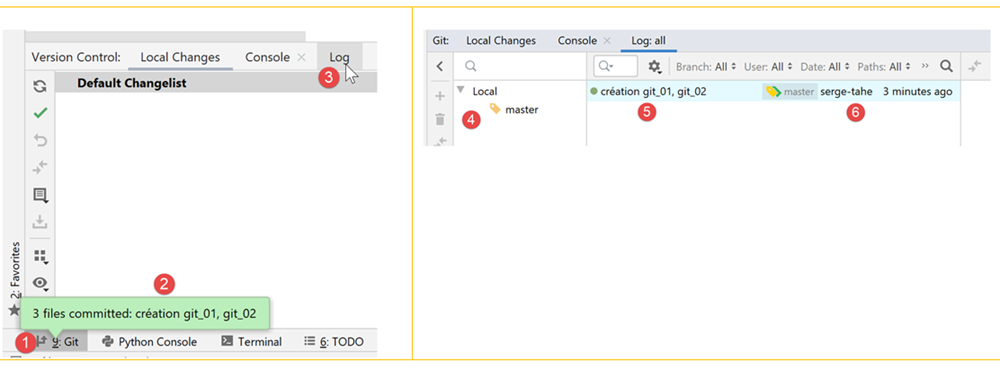
- en [1-2], confirmation du commit ;
- en [3], on sélectionne l’onglet [Log] ;
- en [4], une vue des branches du projet. Ici, une seule branche appelée [master] ;
- en [5-6], le commit qui vient d’être effectué ; Maintenant créons de la même façon un script [git_03] :
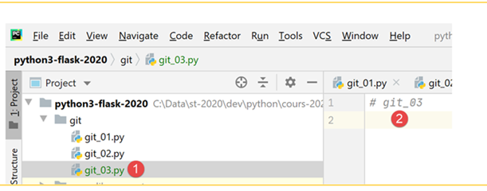
Modifions le script [git_02] et supprimons le script [git_01] :
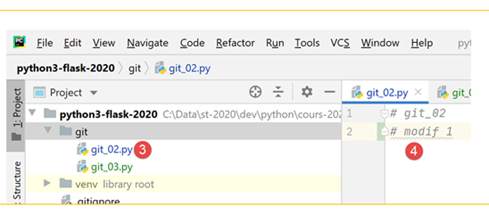
Puis committons la nouvelle version :
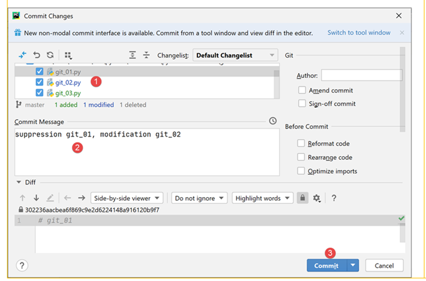
Maintenant nous avons deux commits dans les logs :
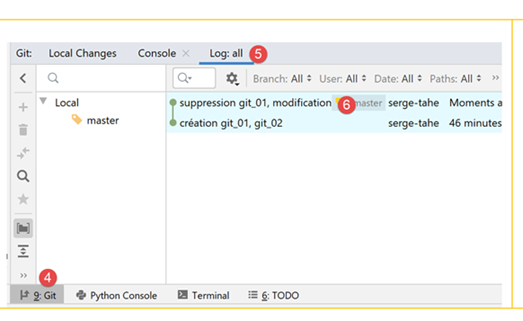
Lorsqu’on sélectionne un commit particulier, apparaît sur sa droite l’arbre des fichiers du projet :
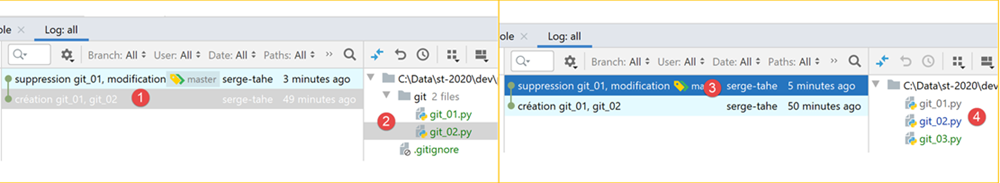
Maintenant supposons que le dernier commit nous ait amenés à une impasse et que l’on voudrait revenir à une situation correspondant à l’un des commit précédents :
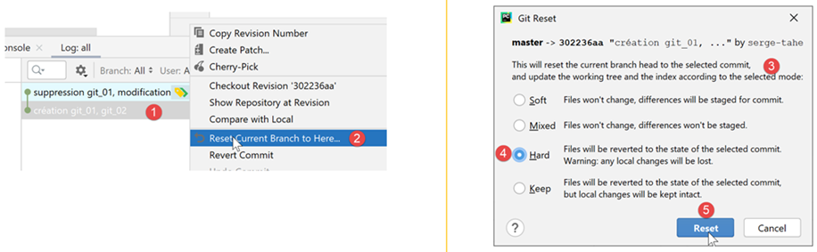
- en [1-2], on sélectionne le commit dans l’état duquel on veut revenir ;
- en [3-5], existent plusieurs modes de reset. Nous choisissons le mode [hard] qui revient à l’état sélectionné en perdant les changements qui ont été faits depuis ;
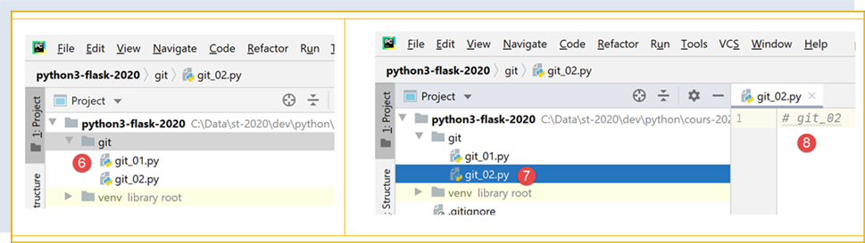
- en [6], on a récupéré [git_01] qui avait été supprimé ;
- en [7-8], on retrouve [git_02] dans son état original sans la modification qui avait été faite ; Maintenant, modifions [git_02] et ajoutons [git_03] [1-4] :
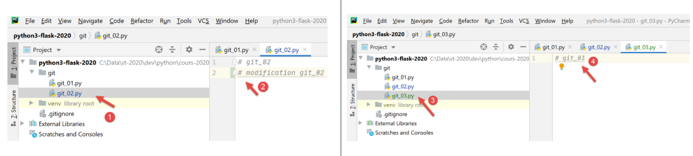
Maintenant, refaisons l’opération de revenir au commit initial :
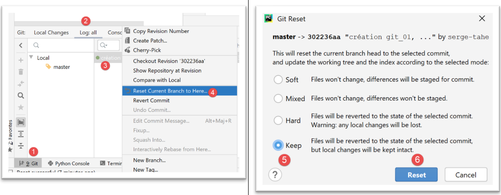
- en [1-4], on revient à la photo du commit n° 1 ;
- en [5-6], on prend l’option [Keep] au lieu de [Hard]. Ces options ne sont pas simples à comprendre. Aussi faut-il les essayer :
| 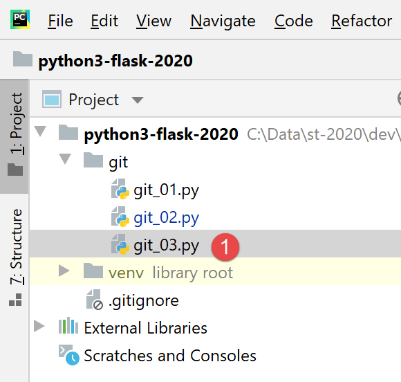 | 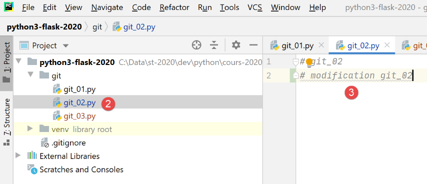 |
- en [1], le fichier [git_03] est toujours là ;
- en [2-3], le fichier [git_02] a gardé ses modifications ; Difficile de dire ce qu’a fait ce [Revert Commit]. Maintenant committons la situation actuelle :
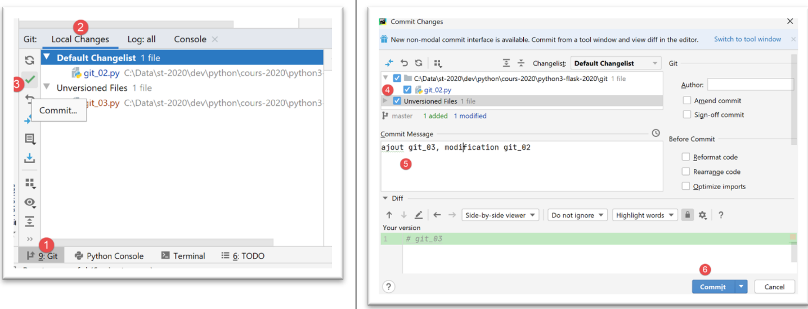
- en [1-6], le commit ;
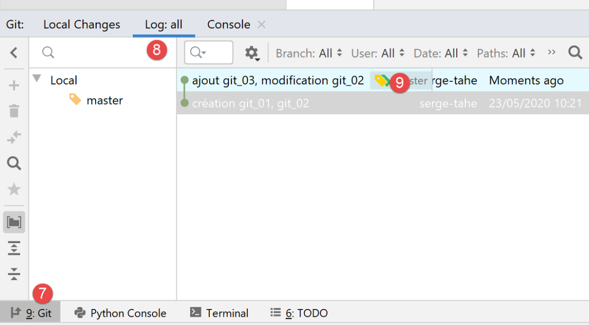
- en [9], on voit le nouveau commit ; Maintenant, essayons de revenir au commit 1 comme il a déjà été fait :
| 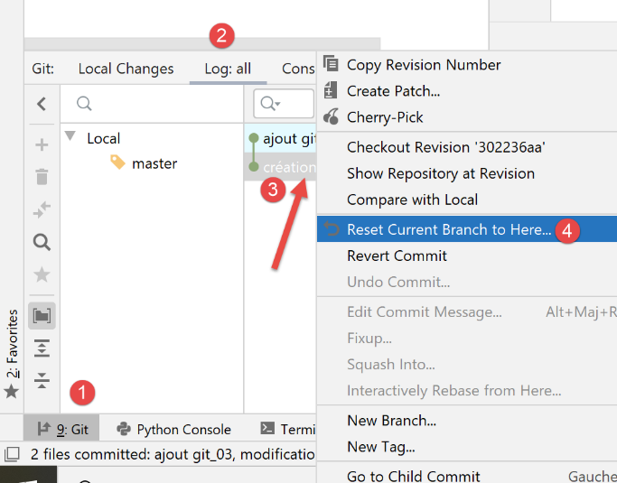 | 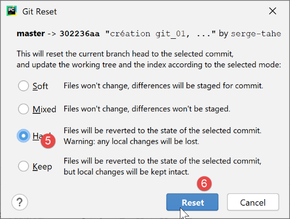 |
- en [1-6], on revient au commit n° 1 en mode [Hard] ;

-
en [7-8], on a cette fois bien perdu toutes les modifications faites depuis le 1er commit ; Dans la suite, nous ne reviendrons plus sur [Git]. Le lecteur pourra travailler de la façon suivante :
-
il pourra suivre les exemples qui sont donnés soit en les tapant lui-même, soit en les récupérant sur le site du cours ;
- à chaque fois qu’un exemple fonctionne, il pourra committer son projet ;
- lorsqu’il développe ses propres codes et qu’il est dans une impasse, il sait qu’il peut revenir à une situation stable, en revenant à un commit précédent ;
2.3. Conventions d’écriture du code Python
On peut écrire du code Python sans conventions d’écriture et ça ne l’empêchera pas de fonctionner. Mais il pourrait ne pas être apprécié de la communauté Python qui a édicté des conventions d’écriture. Celles-ci sont résumées dans un Post à l’adresse |https://stackoverflow.com/questions/159720/what-is-the-naming-convention-in-python-for-variable-and-function-names| :
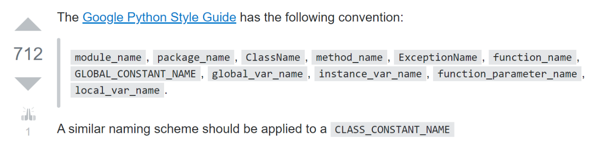
- le nom d’un module (module_name) suit une convention appelée parfois [snake_case] : tout en minuscules comportant éventuellement des mots séparés par le caractère souligné. Cette convention [snake_case] s’applique aux noms de méthodes, de packages, de variables, de fonctions ;
- le nom d’une classe (ClassName) suit une convention appelée parfois [PascalCase] : une suite de mots collés avec chaque lettre de début de mot en majuscule ;
- les noms de constantes suivent la convention [SNAKE_CASE] : suite de mots en majuscules séparés par le caractère souligné ; Ces conventions ont été globalement suivies dans ce document. Néanmoins pour les modules définissant une classe, j’ai donné au module le même nom que la classe qu’il contient. Il suit donc la convention [PascalCase] au lieu de [snake_case]. Je voulais pouvoir repérer rapidement les modules de classes.